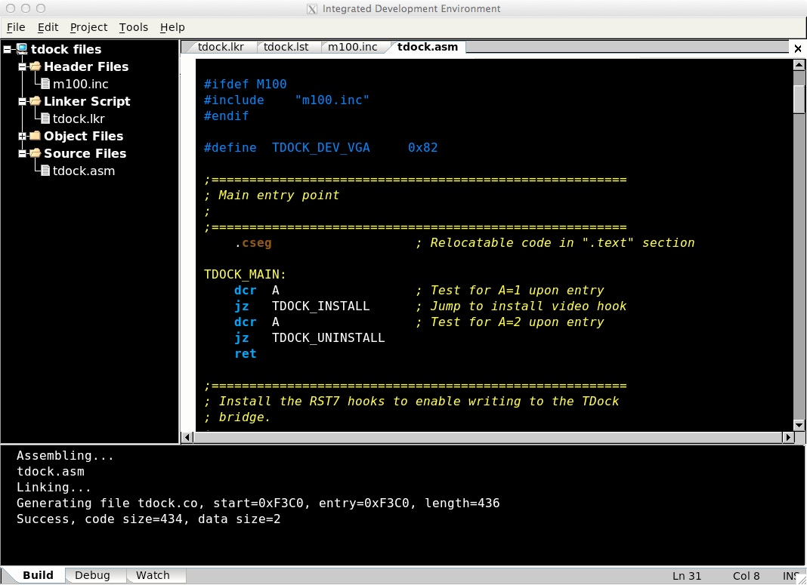

This chapter describes VirtualT's Integrated Development Environment (IDE). The IDE provides an enviroment for writing, assembling and debugging assembly language programs directly on the emulated hardware.
The IDE provides an editing and programming environment for 8085 assembly language programs. It has three panes for presenting information used during a programming session. These consist of a Project Tree control pane, an Editor / open file tab pane, and a message window pane. These are demonstrated in the image below.

The assembler in VirtualT is a relocating / linking assembler. As such, it builds (or can build) programs from more than just a single source file, each of which is assembled individually into .obj files and then linked together later. This means that unlike some assemblers, simply providing an assembly file (.asm) isn't enough information to build the final binary.
The IDE therefore uses Project files (.prj) which specify all the informaiton required during botht the assembly step and the link step including which files to assemble, project defines and a linker script (*.lkr) that defines where assembled code should be located.
A project file stores all information needed to build an application, be it a .CO file or an OptROM. All files added to a project file will appear in the tree control in the left-hand project pane. Other project settings are configured using the Projects -> Settings item in the Project menu of the IDE window.
New projects are created using File -> New Project menu item. By default, VirtualT tries to create projects within their own directory under the "Projects" directory from the main VT Emulation directory. When the project is created, a project name and type must be supplied. The project type can be changed later, however the name cannot (at least not without hand editing and renaming the project file).